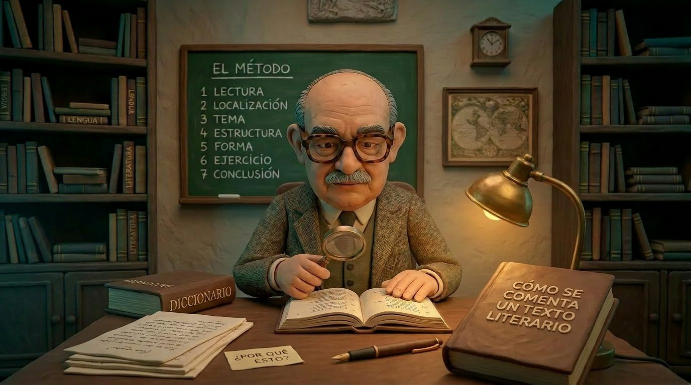
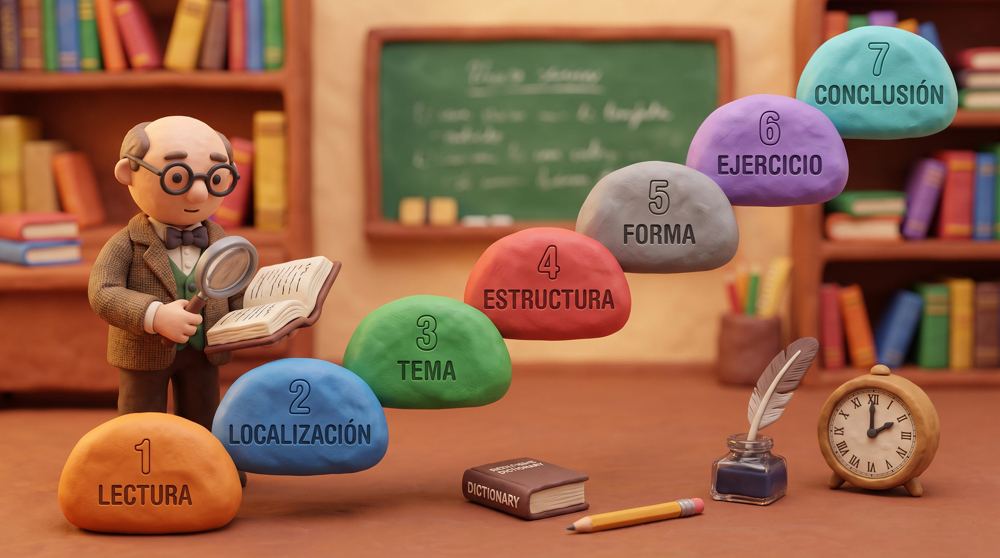
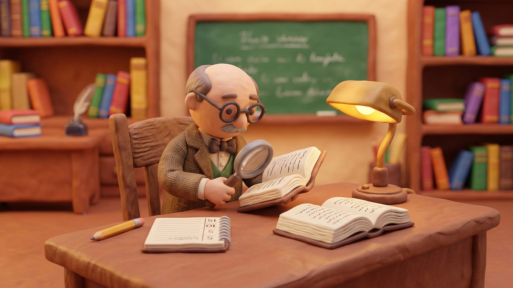
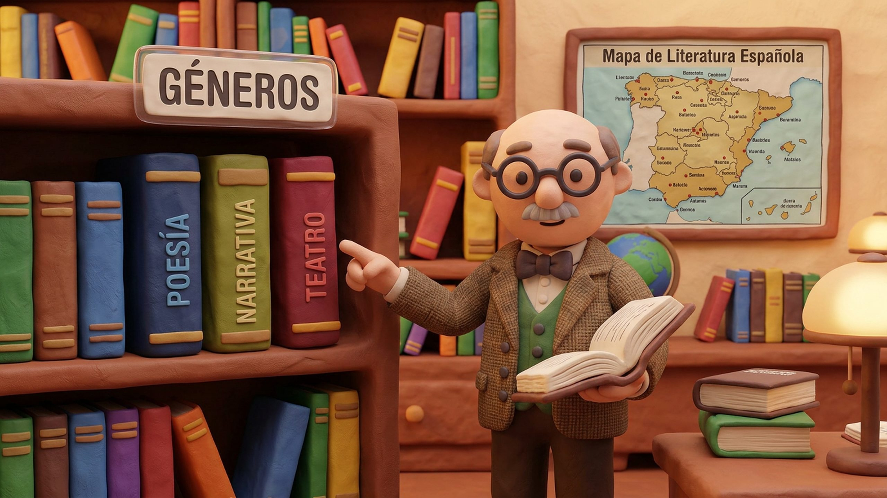
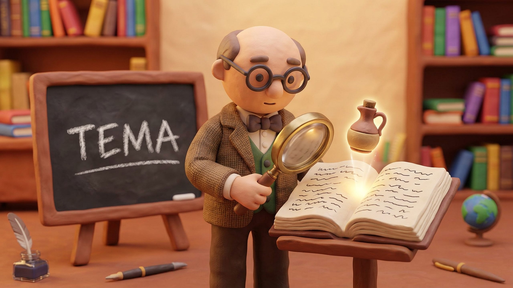
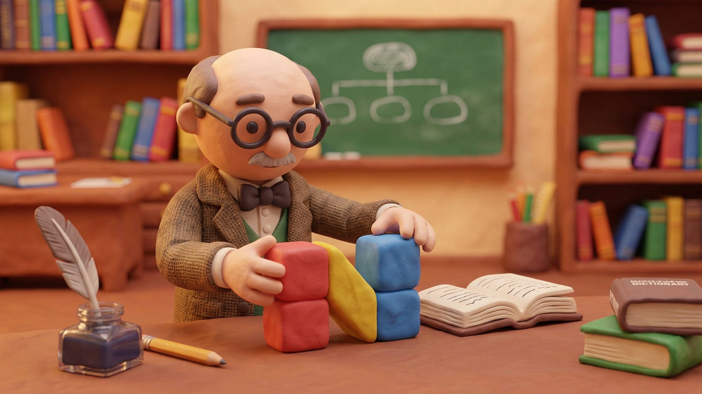
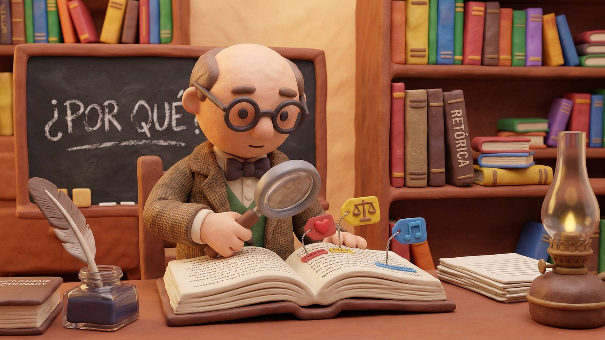
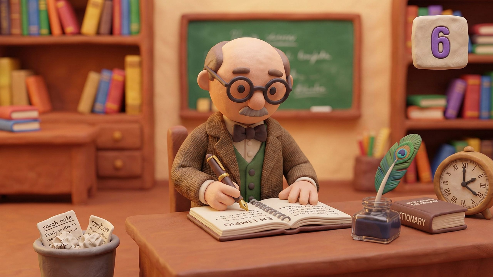
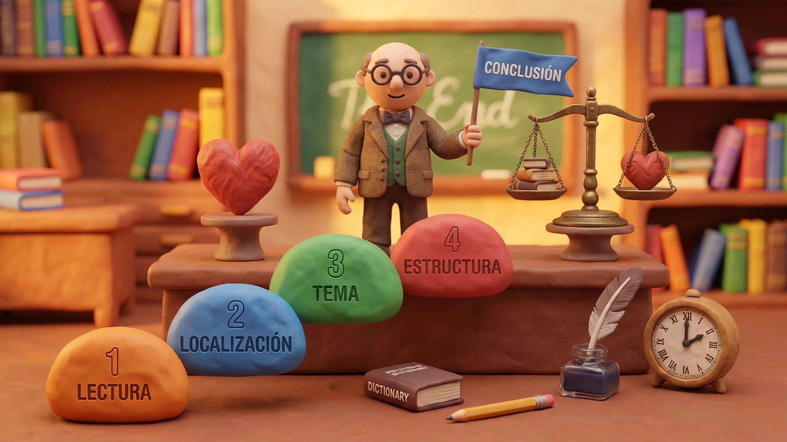
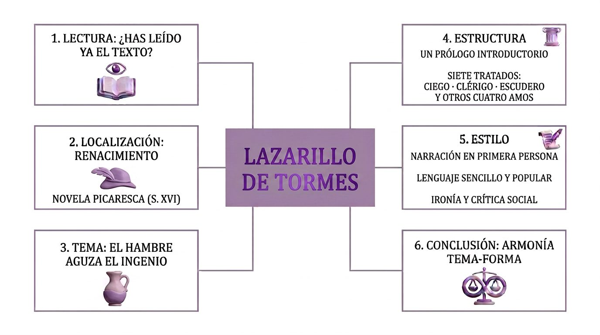

LECTURA
COMPRENSIÓNDICCIONARIO


El método organiza el análisis literario en siete fases relacionadas entre sí.
Primero se comprende y sitúa el texto; después se identifican su tema, su estructura y su forma.
Por último, las observaciones se ordenan en un comentario y se cierra con una conclusión.

Primero, leamos el texto literario que hay que analizar. Buscaremos en el diccionario todas las palabras cuyo significado no nos resulte completamente claro. Solo nos interesa la acepción más adecuada al texto. Debemos comprender el pasaje, pero no trataremos de interpretarlo.
Numeraremos los versos o las líneas de cinco en cinco.
EN RESUMEN | |
|---|---|
| LECTURA | Comprender el pasaje antes de interpretarlo.[3] |
| DICCIONARIO | Elegir el significado adecuado al contexto. |
| NUMERACIÓN | Numerar versos o líneas de cinco en cinco. |

Nos daremos cuenta de si es un texto independiente o un fragmento. Señalaremos el género literario a que pertenece.
Si se trata de un texto completo. Debemos localizarlo en la obra total del escritor, con ayuda del manual de Literatura.
Si se trata de un texto fragmentario. Hay tres casos posibles:
Hemos leído la obra a que el texto pertenece. Referiremos la obra al conjunto de obras del autor. Para ello buscaremos en el manual de Literatura datos acerca de dichas obras, del ambiente ideológico y artístico en que aquél vive, etc.
Situaremos, después, el fragmento dentro de la obra a que pertenece.
Narraremos sucintamente el contenido de la obra, y señalaremos en qué punto se inserta dicho fragmento.
Conocemos sólo el capítulo (o la escena, o el canto, etc.) a que el texto pertenece. Con ayuda del manual, referiremos la obra al conjunto de obras del autor, ambiente ideológico, artístico, etc.
Narraremos brevemente el argumento o contenido de la obra, aludiremos a su significado, y situaremos en ella el capítulo (o escena, o canto, etc.) que conocemos, y en él situaremos y destacaremos el fragmento que se nos ha propuesto.
El texto pertenece a una obra de la que no conocemos nada. Buscaremos en el manual algunos datos sobre obras del autor y sobre aquella obra en particular, y procederemos como en el primer caso. Si no hallamos nada, pasemos a la fase siguiente.
EN RESUMEN | |
|---|---|
| TEXTO | Distinguir una obra completa de un fragmento.[3] |
| CONTEXTO | Relacionar la obra con su autor y su ambiente. |
| FRAGMENTO | Situarlo en la obra con la información disponible. |

Reduzcamos el asunto a las líneas más generales. Procuraremos que ni falte ni sobre nada y que lo que escribimos sea claro, breve y exacto. Intentemos dar con la palabra abstracta que sintetice la intención del escritor.
Por ejemplo, un tema de Lazarillo de Tormes que podríamos destacar es el siguiente:
El tema del fragmento es simple: el pícaro nos cuenta la astucia con que, impulsado por su afición invencible al vino, inventa un ardid habilísimo para seguir robándoselo al receloso ciego.
EN RESUMEN | |
|---|---|
| TEMA | Expresar la idea central de forma clara y breve.[4] |
| EJEMPLO | En el fragmento de Lazarillo destaca la astucia para obtener vino. |

Fijaremos primero la estructura métrica, si el texto está en verso. Buscaremos después los apartados (pero empezaremos aquí si el texto está en prosa). Los apartados serán poco numerosos (dos, tres, cuatro…). Los apartados no coincidirán siempre con las estrofas (si el texto está en verso).
Los apartados contienen modulaciones distintas del tema que hemos determinado en la fase anterior. Hay textos sin estructura aparente. No olvidaremos que todos los elementos del texto son solidarios.
Los apartados no son, pues, partes del texto.
EN RESUMEN | |
|---|---|
| VERSO | Observar primero la estructura métrica si procede. |
| APARTADOS | Identificar pocas unidades relacionadas con el tema. |
| ESTROFAS | Los apartados no siempre coinciden con las estrofas. |

Hay siempre una estrecha relación entre el tema y la forma. Este se expresa en el principio fundamental:
El tema de un texto está presente en los rasgos formales de ese texto.
El análisis consiste en el justificar cada rasgo formal del texto como una exigencia del tema. No pasaremos de un verso a otro, o de una línea a otra, sin haber analizado completamente ese verso o esa línea. Nuestro análisis seguirá, pues, el orden de la lectura.
Ante todos los rasgos formales (léxicos, sintácticos, métricos, figuras retóricas, etc.) y aun ideológicos que nos vayan llamando la atención, nos preguntaremos: «¿Por qué esto?» Y trataremos de justificarlo como una exigencia del tema.
Necesitaremos para este análisis todos los manuales que poseamos de Lengua y Literatura.
De todas nuestras observaciones en esta y en las anteriores fases, habremos ido tomando nota en un borrador.
EN RESUMEN | |
|---|---|
| TEMA Y FORMA | Relacionar los rasgos formales con el tema. |
| ANÁLISIS | Justificar las observaciones siguiendo la lectura. |
| BORRADOR | Anotar las observaciones para el comentario. |

Antes de establecer la conclusión, redactaremos el ejercicio en limpio. Para componerlo seguiremos el orden de nuestras notas en el borrador. Si las notas son apuntes rápidos y descuidados, que tal rapidez y descuido no pasen al ejercicio.
En nuestras notas habrá quizá observaciones desdeñables, imprecisas, reiterativas. Probablemente, al redactar el ejercicio, se nos ocurran cosas en que antes no habíamos caído.
Incluyámoslas en el lugar oportuno.
EN RESUMEN | |
|---|---|
| REDACCIÓN | Pasar el análisis a limpio siguiendo las notas. |
| REVISIÓN | Eliminar repeticiones y añadir ideas pertinentes. |

La conclusión tiene dos momentos: balance e impresión personal.
Balance. Resaltaremos los rasgos comunes de nuestras observaciones, que confirman el principio fundamental. No entraremos en detalles.
Impresión personal. Nuestra impresión será sincera, modesta y firme. Rehuiremos el empleo de fórmulas hechas o demasiado generales. Nos concretaremos al pasaje, y no a otras cosas que hayamos leído sobre o del autor.
EN RESUMEN | |
|---|---|
| BALANCE | Recoger los rasgos comunes sin repetir detalles. |
| IMPRESIÓN | Expresar una valoración sincera sobre el pasaje. |

Texto literario: [5]
Per prima cosa, leggiamo il testo letterario che bisogna analizzare. Cercheremo nel dizionario tutte le parole il cui significato non ci risulti completamente chiaro. Ci interessa solamente l'accezione che è più adatta al testo.
Dobbiamo comprendere il brano, ma non cercheremo di interpretarlo.
Numereremo i versi o le righe ogni cinque.
IN SINTESI | |
|---|---|
| LETTURA | Comprendere il brano prima di interpretarlo.[3] |
| DIZIONARIO | Scegliere il significato adatto al contesto. |
| NUMERAZIONE | Numerare versi o righe ogni cinque. |
Nella seconda fase cercheremo di capire se ci troviamo di fronte a un testo completo o a un frammento. Di tale testo indicheremo poi il genere letterario a cui appartiene.
Se si tratta di un testo completo. Dovremo ricontestualizzarlo all'interno dell'intera produzione letteraria dello scrittore, servendoci del manuale di Letteratura.
Se si tratta di un testo frammentario. I casi possibili sono tre:
Si è già letta l'opera a cui il testo appartiene. Se l'opera a cui appartiene il frammento l'abbiamo già letta, dovremo ricollocarla all'interno dell'intera produzione dello scrittore.
Per questo nel manuale di Letteratura cercheremo dati relativi ai vari scritti dell'autore, all'ambiente ideologico e artistico a cui questi appartiene, ecc. In seguito, il frammento verrà ricollocato a sua volta all'interno della singola opera da cui è tratto.
Si esporrà succintamente il contenuto dell'opera e si specificherà dove si inserisce il frammento analizzato.
Si conosce solo il capitolo (o la scena o il canto, ecc.) a cui il testo appartiene. Con l'aiuto del manuale, metteremo in relazione l'opera analizzata con l'insieme degli scritti dell'autore, col suo ambiente ideologico e artistico, ecc.
Esporremo brevemente l'argomento dell'opera e, facendo riferimento al suo contenuto, la collocheremo all'interno del capitolo che già conosciamo.
In questo capitolo analizzeremo il frammento dell'opera che ci è stato assegnato.
Il testo appartiene a un'opera di cui non conosciamo nulla. Ricercheremo nel manuale alcuni dati riguardanti l'intera produzione letteraria dell'autore e di quell'opera in particolare, e procederemo come nel primo caso. Se non troviamo nulla, passeremo alla fase successiva.
IN SINTESI | |
|---|---|
| TESTO | Distinguere un testo completo da un frammento.[3] |
| CONTESTO | Collegare l'opera all'autore e al suo ambiente. |
| FRAMMENTO | Collocarlo nell'opera usando le informazioni disponibili. |
In questa fase riassumeremo brevemente l'argomento del frammento. Staremo attenti a che non manchi o avanzi niente e che quanto scriviamo sia chiaro, breve ed esatto. Attraverso un lavoro di sintesi e di concettualizzazione cercheremo di rielaborare l'intenzione dell'autore.
Ad esempio, un tema del Lazarillo de Tormes potrebbe essere il seguente:
Il tema del frammento è semplice: il picaro ci racconta le astuzie che usa per raggirare l'avarizia del cieco che accompagna. A causa del suo amore irrefrenabile per il vino, il picaro inventa uno stratagemma infallibile per rubare al cieco tutto il suo vino.
IN SINTESI | |
|---|---|
| TEMA | Esprimere l'idea centrale in modo chiaro e breve.[4] |
| ESEMPIO | Nel brano del Lazarillo emerge l'astuzia per ottenere vino. |
Nella quarta fase stabiliremo la struttura metrica del componimento analizzato, nel caso in cui ci troviamo di fronte a una opera in versi. In seguito, scomporremo il testo in sezioni (o inizieremo da qui se il testo è in prosa).
Le sezioni saranno poco numerose (due, tre o quattro suddivisioni al massimo). Le sezioni individuate non dovranno necessariamente coincidere con la strofa, qualora avessimo un testo in versi.
Ogni suddivisione conterrà modulazioni distinte del tema principale individuato nella fase precedente. Potremmo trovare anche dei testi che non presentano chiare suddivisioni. Ricordiamoci che tutti gli elementi di un testo sono collegati tra loro in qualche modo.
Le sezioni, dunque, non saranno parti estranee al testo.
IN SINTESI | |
|---|---|
| VERSI | Osservare prima la struttura metrica, se presente. |
| SEZIONI | Individuare poche unità collegate al tema. |
| STROFE | Le sezioni non coincidono sempre con le strofe. |
Il tema del testo e la sua forma sono sempre strettamente correlati tra di loro. Ciò è quanto viene espresso nel principio fondamentale dell'analisi testuale:
Il tema di un testo è presente in tutti gli aspetti formali del testo stesso.
L'analisi testuale, quindi, consiste nel giustificare ogni aspetto formale del testo ponendolo in relazione al suo tema principale. Perciò, ogni verso o rigo del testo varrà analizzato in modo dettagliato ed esaustivo, prima di passare al rigo successivo.
La nostra analisi seguirà l'ordine di lettura. Di fronte a tutti gli aspetti formali (lessicali, sintattici, metrici, figure retoriche, ecc.) e ideologici che notiamo, ci domanderemo: «Perché questo?», e cercheremo di giustificarlo come esigenza del tema principale.
Per fare questo tipo di analisi avremo bisogno di diversi manuali di Lingua e Letteratura.
In ultimo, di tutte le osservazioni elaborate in questa fase e in quelle precedenti prenderemo appunti in brutta copia.
IN SINTESI | |
|---|---|
| TEMA E FORMA | Collegare gli aspetti formali al tema. |
| ANALISI | Motivare le osservazioni seguendo la lettura. |
| APPUNTI | Conservare le osservazioni per il commento. |
Prima di scrivere le conclusioni, riporteremo l'intera analisi testuale in bella copia seguendo l'ordine degli appunti della brutta. Staremo attenti a che l'inaccuratezza della brutta copia non passi in bella.
Infatti, negli appunti in brutta potremmo rilevare delle osservazioni imprecise o delle ripetizioni concettuali che non trascriveremo nella bella.
Inoltre, nella bella potremo riportare ulteriori osservazioni che ci sono venute in mente solo in un secondo momento, inserendole opportunamente nel testo.
IN SINTESI | |
|---|---|
| STESURA | Scrivere l'analisi in bella copia seguendo gli appunti. |
| REVISIONE | Eliminare ripetizioni e aggiungere idee pertinenti. |
Le conclusioni prevedono due momenti: il bilancio finale e l'impressione personale.
Bilancio finale. Nel bilancio finale riporteremo le osservazioni salienti formulate nella nostra disamina, conformemente al principio fondamentale dell'analisi testuale. In questa fase non ci dilungheremo con ulteriori dettagli.
Impressione personale. La nostra impressione personale dovrà essere sincera, modesta e ferma. Eviteremo, dunque, l'impiego di formule fatte o che siano troppo generali.
Tale impressione sarà relativa solo al frammento analizzato e non verrà influenzata dalle altrui impressioni sull'opera o sull'autore lette altrove.
IN SINTESI | |
|---|---|
| BILANCIO | Raccogliere gli aspetti comuni senza ripetere dettagli. |
| IMPRESSIONE | Esprimere una valutazione sincera sul brano. |
Elige una sola respuesta para cada pregunta.
1. Durante la lectura inicial, ¿cómo se aclara una palabra con varios significados?
| A. Se elige la acepción adecuada al pasaje | B. Se comentan todas las acepciones por igual |
| C. Se elige siempre la más frecuente | D. Se espera a la conclusión para consultarla |
2. Si se conoce toda la obra, ¿qué implica localizar un fragmento?
| A. Situarlo en la obra y esta en el conjunto del autor | B. Indicar solo el género del fragmento |
| C. Resumir al autor sin situar el fragmento | D. Comparar las ediciones sin ubicar el pasaje |
3. Si no se halla información sobre una obra desconocida, ¿cómo se continúa?
| A. Se sustituye el tema por una hipótesis biográfica | B. Se pasa a la fase siguiente del análisis |
| C. Se da por terminada la lectura del fragmento | D. Se considera completa la localización histórica |
4. ¿Qué distingue la determinación del tema de un relato detallado del argumento?
| A. Presenta todos los hechos en orden | B. Reproduce las palabras del pasaje |
| C. Formula con precisión una idea central | D. Enumera los datos sobre el autor |
5. En el ejemplo del Lazarillo, ¿qué relación resume mejor el tema del fragmento?
| A. La astucia de Lázaro y su deseo de obtener vino | B. El origen de Lázaro y los oficios de sus padres |
| C. La amistad del ciego con otros personajes | D. El viaje a una ciudad y sus monumentos |
6. En un poema, ¿qué relación puede haber entre apartados temáticos y estrofas?
| A. Cada apartado coincide siempre con una estrofa | B. Pueden organizarse de manera diferente |
| C. Solo existen apartados en textos en prosa | D. Cada verso forma necesariamente un apartado |
7. Al identificar una figura retórica, ¿qué paso completa su análisis?
| A. Relacionarla con el tema del texto | B. Indicar solo el nombre técnico |
| C. Sustituirla por una frase más sencilla | D. Contar únicamente sus repeticiones |
8. Al redactar el comentario en limpio, ¿cómo se utilizan los apuntes?
| A. Se copian sin cambiar su orden ni revisar | B. Se omiten todas las ideas nuevas |
| C. Se corrigen repeticiones y se integran ideas útiles | D. Se sustituyen por una opinión general |
9. ¿Qué distingue el balance de la impresión personal en la conclusión?
| A. El balance inventa datos; la impresión los corrige | B. El balance enumera detalles; la impresión los omite |
| C. El balance resume rasgos; la impresión valora el pasaje | D. El balance precede a la lectura; la impresión al tema |
10. ¿Qué orden corresponde a las primeras fases del método?
| A. Tema, lectura, localización | B. Localización, tema, lectura |
| C. Lectura, tema, localización | D. Lectura, localización, tema |
Scegli una sola risposta per ogni domanda.
1. Nella prima lettura, come si chiarisce una parola con più significati?
| A. Si sceglie il significato adatto al brano | B. Si commentano tutti i significati allo stesso modo |
| C. Si sceglie sempre quello più frequente | D. Si aspetta la conclusione per consultarla |
2. Se si conosce l’intera opera, che cosa implica localizzare un frammento?
| A. Collocarlo nell’opera e questa nella produzione dell’autore | B. Indicare solo il genere del frammento |
| C. Riassumere l’autore senza situare il frammento | D. Confrontare le edizioni senza collocare il brano |
3. Se non si trovano informazioni su un’opera sconosciuta, come si continua?
| A. Si sostituisce il tema con un’ipotesi biografica | B. Si passa alla fase successiva dell’analisi |
| C. Si conclude la lettura del frammento | D. Si considera completa la localizzazione storica |
4. Che cosa distingue la determinazione del tema da un racconto dettagliato della trama?
| A. Presenta tutti i fatti in ordine | B. Riproduce le parole del brano |
| C. Formula con precisione un’idea centrale | D. Elenca i dati sull’autore |
5. Nell’esempio del Lazarillo, quale relazione riassume meglio il tema del frammento?
| A. L’astuzia di Lázaro e il desiderio di ottenere vino | B. Le origini di Lázaro e il lavoro dei genitori |
| C. L’amicizia del cieco con altri personaggi | D. Il viaggio in una città e i suoi monumenti |
6. In una poesia, quale rapporto può esserci tra sezioni tematiche e strofe?
| A. Ogni sezione coincide sempre con una strofa | B. Possono organizzarsi in modo diverso |
| C. Le sezioni esistono solo nei testi in prosa | D. Ogni verso forma necessariamente una sezione |
7. Individuata una figura retorica, quale passaggio completa la sua analisi?
| A. Collegarla al tema del testo | B. Indicare solo il nome tecnico |
| C. Sostituirla con una frase più semplice | D. Contare soltanto le sue ripetizioni |
8. Nella stesura in bella copia, come vengono utilizzati gli appunti?
| A. Si copiano senza rivedere o modificare nulla | B. Si omettono tutte le nuove idee |
| C. Si correggono ripetizioni e si integrano idee utili | D. Si sostituiscono con un’opinione generale |
9. Che cosa distingue il bilancio dall’impressione personale nella conclusione?
| A. Il bilancio inventa dati; l’impressione li corregge | B. Il bilancio elenca dettagli; l’impressione li omette |
| C. Il bilancio riassume i tratti; l’impressione valuta il brano | D. Il bilancio precede la lettura; l’impressione il tema |
10. Quale ordine corrisponde alle prime fasi del metodo?
| A. Tema, lettura, localizzazione | B. Localizzazione, tema, lettura |
| C. Lettura, tema, localizzazione | D. Lettura, localizzazione, tema |
COMPRENSIÓNDICCIONARIO
OBRA Y AUTORFRAGMENTO
IDEA CENTRALSÍNTESIS
VERSO O PROSAAPARTADOS
RASGOSTEMA
BORRADORREVISIÓN
BALANCEIMPRESIÓN
COMPRENSIONEDIZIONARIO
OPERA E AUTOREFRAMMENTO
IDEA CENTRALESINTESI
VERSI O PROSASEZIONI
ASPETTI FORMALITEMA
APPUNTIREVISIONE
BILANCIOIMPRESSIONE
[1] CARRETER LÁZARO, Fernando - CALDERÓN CORREA, Evaristo. Cómo se comenta un texto literario, Madrid: Cátedra, 2013 (1974), pág. 109-112. - Traduzione di Andrea Centinaro.
[2] Lázaro Carreter, Fernando; Correa Calderón, Evaristo. Cómo se comenta un texto literario. Ediciones Cátedra, ficha editorial de 2006. Ficha del libro.
[3] IES do Barral. Realización de comentarios de texto, guía práctica: lectura, localización, tema, estructura, forma y conclusión. Consultar la guía.
[4] Real Academia Española y ASALE. Diccionario de la lengua española, voz «tema», acepción 1.c. Consultar la entrada.
[5] Anónimo. La vida de Lazarillo de Tormes y de sus fortunas y adversidades, tratado primero. Biblioteca Virtual Miguel de Cervantes. Leer el texto.